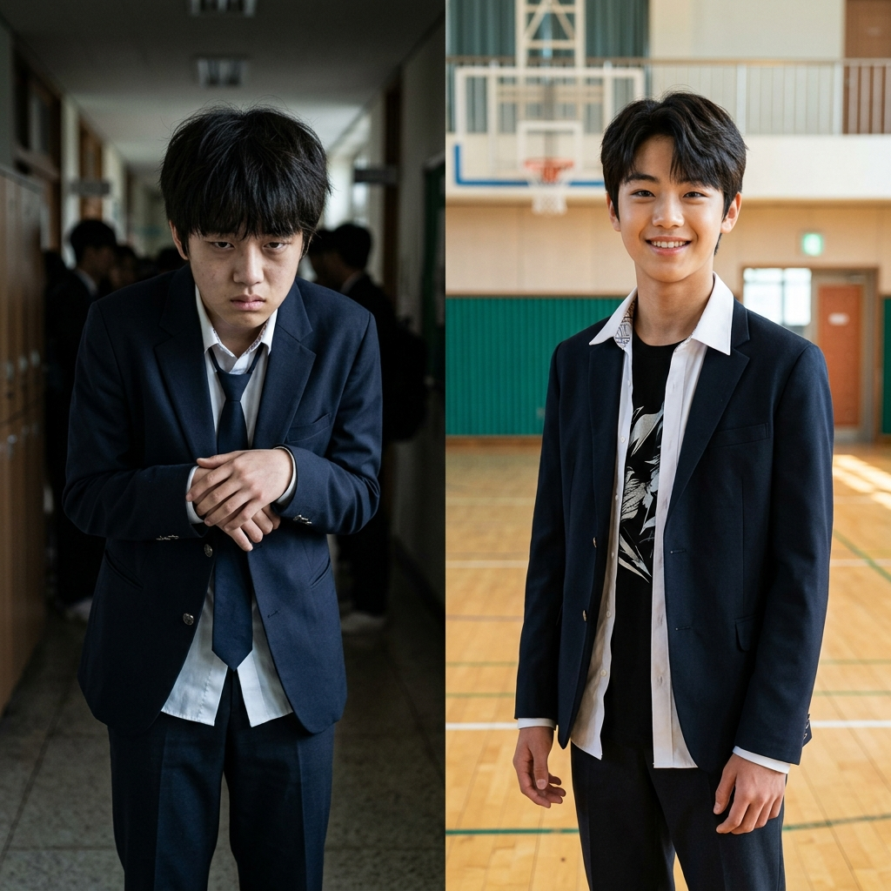
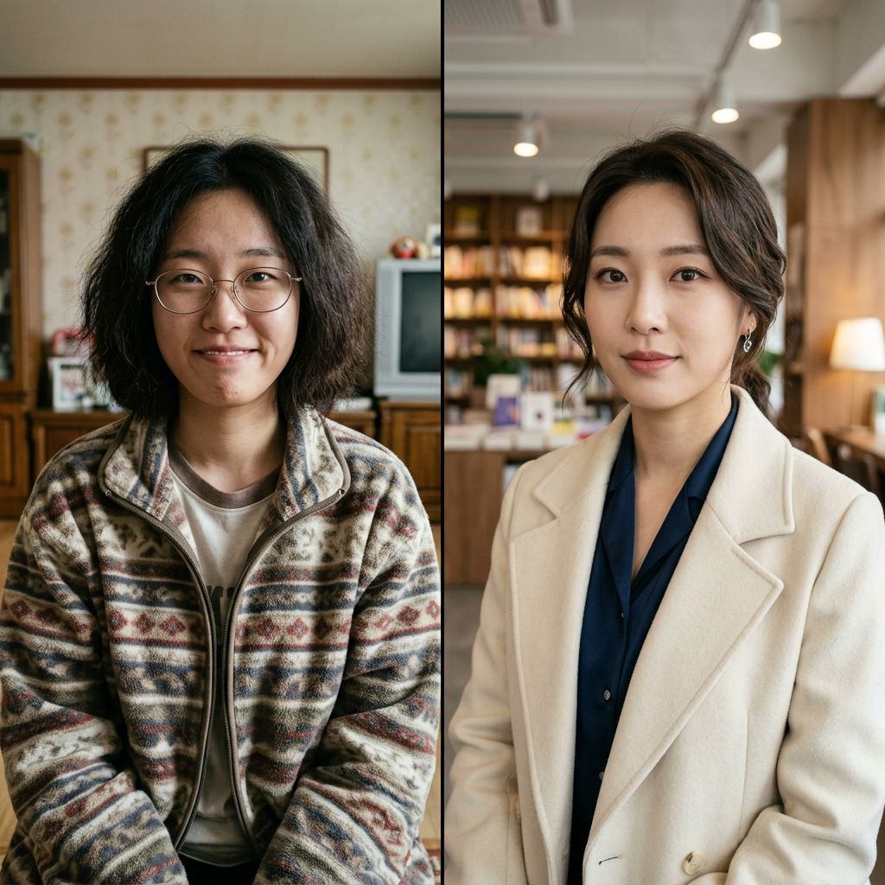

2026 한국 개명 트랜드 비포 & 애프터
— 이름이 바꾸는 인상의 기적
"이름을 바꾸고 나서 거울을 보는 것이 즐거워졌어요." 개명을 결심하고 QARAH를 찾은 한 고객의 말입니다. 이름은 타인이 나를 부르는 고유한 기호이지만, 동시에 나 자신이 나를 정의하는 가장 내밀한 거울이기도 합니다.
2026년 대한민국은 연간 10만 명 이상이 개명을 선택하는 '개명 대중화' 시대를 지나, 자신의 정체성을 찾아가는 '자아 실현'의 단계에 접어들었습니다. 단순히 촌스럽거나 놀림감이 되는 이름을 넘어, **내가 원하는 삶의 모습(Image)**과 이름을 일치시키려는 노력이 이어지고 있죠. QARAH는 이름이 주는 심상과 실제 인상의 연관성을 분석하여, 2026년 가장 대표적인 개명 트렌드 10가지를 비각화된 데이터로 풀어보았습니다.
🏛️ TOP 10 개명 사례: 인상과 정체성의 변화



9. 무명(無名) → 도현(道賢)
정체성이 희미했던 '공통된 하나'에서, 현명한 길을 걷는 '빛나는 존재'로의 변화를 상징합니다.
10. 말숙(末淑) → 윤설(允雪)
과거형의 낡은 정서 대신, 맑고 투명한 눈(Snow)처럼 고귀하고 깨끗한 이미지를 불어넣는 현대적 작명의 정수입니다.
🔎 자주 묻는 질문(FAQ)
A: 그렇습니다. 심리학적으로 이를 **'라벨링 효과'**라고 합니다. 불리는 이름의 뉘앙스에 맞춰 본인의 태도가 변화하고, 그 변화가 누적되어 얼굴 근육과 표정에 영향을 주어 실제 인상이 바뀌게 됩니다.
A: 단순히 예쁜 단어보다, 본인의 **'퍼스널 브랜딩'**과 일치하는 실질적인 아우라를 고려해야 합니다. QARAH는 인공지능 분석을 통해 당신의 잠재된 인상과 가장 어울리는 이름을 정밀 추천해 드립니다.
💡 QARAH의 철학: 이름은 당신이 선택하는 운명입니다
주어진 이름에 적응하며 사는 시대는 끝났습니다. 이제 내가 누구인지, 어떤 인상으로 기억되고 싶은지에 따라 이름을 '개척'하는 시대입니다. 이름의 변화가 가져올 찬란한 내일, QARAH가 그 첫 걸음을 함께 소망합니다.